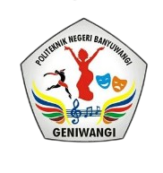
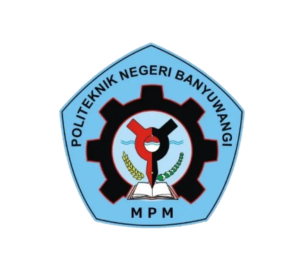

Building Robust Web & IoT Solutions with Engineering Precision.
Hi, I'm Rafli Ainun Prasetya. Software Engineering graduate from Politeknik Negeri Banyuwangi (GPA 3.72/4.00) specializing in Laravel web platforms, RESTful APIs, IoT sensor telemetry, and responsive digital products.
Bridging Web Applications, IoT Telemetry, and Clean Systems.
Who I Am
I am a Software Engineering Technology graduate from Politeknik Negeri Banyuwangi with a comprehensive background in developing scalable web applications, administrative dashboards, and IoT-integrated services.
Having worked on both production internships and community projects, I thrive at the intersection of business logic, database architecture, and user-centric interfaces.
What I Specialize In
- Backend & Dashboards: Modern Laravel, Blade, RESTful API endpoints, and Spatie RBAC.
- IoT & Real-Time Data: Interfacing web servers with Raspberry Pi, sensor arrays, and RFID identification.
- Database & Deployment: MySQL query optimization, cPanel hosting, VPS environments, and data pipelines.
- Mobile UI: Frontend Flutter component slicing and clean navigation workflows.
Key Credentials
Work & Internship Experience
Software Engineer Intern
CV. Jayla Tech.ID
Engineered and maintained a centralized web platform for IoT-based environmental flood monitoring, serving administrators, disaster response teams, and public residents.
- Centralized Flood Platform: Developed a responsive web monitoring system using PHP, Laravel, Blade, MySQL, and JavaScript.
- Comprehensive Admin Dashboard: Built administrative modules for real-time sensor monitoring, dam management, subdistrict zoning, public complaint handling, and administrator access control.
- IoT REST API Integration: Architected endpoints to stream water levels, ambient temperature, and humidity datasets collected by field IoT sensor arrays.
- Automated Data Refresh & Visuals: Implemented asynchronous polling with Chart.js time-series graphs, allowing zero-reload dynamic visual tracking for rapid decision-making.
- Hazard Level Indicators: Designed interactive color-coded status badges (Safe, Alert, Danger) for swift public risk assessment.
Featured Engineering Projects
Real-world applications spanning web platforms, IoT smart hardware, mobile, and cloud deployment.

ATM Beras — E-KTP RFID Rice Distribution System
An automated smart rice dispensing and monitoring ecosystem for LAZISMU Rogojampi. Integrates electronic KTP RFID validation with Raspberry Pi hardware to ensure transparent, quota-regulated social aid distribution.
- Integrated RESTful API communication between Laravel cloud server and Raspberry Pi controller.
- Implemented automated WhatsApp notification trigger when beneficiaries are eligible for collection.
- Created administrative analytics dashboard for machine status, stock levels, and distribution history.

Flood Information & Disaster Early Warning Website
Web-based disaster monitoring system presenting IoT water-level sensor telemetry across river dams and subdistricts to mitigate flood risk through rapid visualization.
- Real-time asynchronous telemetry parsing and automated chart visualization with Chart.js.
- Multi-tier administrative portal covering dam records, telemetry logs, and public complaints.
- Clear Safe / Alert / Danger status indicators for instantaneous situational awareness.

Jayla Travel — Travel Agent Web Platform
A comprehensive travel showcase and customer engagement website engineered to present tour destinations, dynamic packages, video highlights, and direct lead generation channels.
- Customized modern responsive landing page layout aligning with travel branding standards.
- Integrated dynamic CMS for travel destinations, itineraries, and media galleries in MySQL.
- Streamlined customer conversion via seamless WhatsApp booking and direct inquiry funnels.

Fish CBR — Case-Based Reasoning Fish Diagnosis System
Expert system that diagnoses fish pathology based on historical similarity matching (Case-Based Reasoning). Deployed and configured for production on cPanel shared hosting.
- Configured complete live hosting environment (DNS, nameservers, PHP extension compatibility, MySQL).
- Engineered CSV data migration pipeline to validate historical diagnosis relation matrices.
- Debugged dependency conflicts and server-level routing for production stability.

Remind U — Activity & Task Reminder App
Cross-platform mobile application engineered to assist users in tracking daily routines, reminders, and schedules with clean typography and fluid component transitions.
- Designed modular screen components and structured layout widgets using Flutter & Dart.
- Implemented smooth cross-screen navigation flows and user input state management.
- Focused on human-centered ergonomics and responsive rendering across mobile screen sizes.

SMK NU Sudirman Rogojampi — Official Web Portal
School company profile website developed under a lecturer-led community service program to modernize the educational institution's digital presence and community transparency.
- Designed tailored responsive layouts using WordPress & Elementor conforming to institutional identity.
- Configured plugins for academic announcements, extracurricular showcase, and contact channels.
- Executed hosting deployment on cPanel and conducted handover training for school staff.
Technical Skill Matrix
Verified tools, languages, and methodologies practiced across production and academic systems.
Backend & Logic
Frontend & Mobile
Infrastructure & IoT
Leadership & Attributes
Certifications & Credentials
Official competency standards issued by national and international institutions.
Certified as Junior Mobile Programmer
Uji Kompetensi Profesi LSP Poliwangi · Mobile Computing
Graduated at Fullstack Web Developer
Program Studi Independen Bersertifikat (SIB Batch 8) · Kemendikbudristek
TOEIC Listening and Reading Test
Official Institutional Score Report · PT International Test Center (ITC)
Leadership & Campus Organizations
Active roles fostering student development, advocacy, and organizational synergy.

Coordinator of Human Resource Development (PSDM)
UKM GENIWANGI — Gema Seni Mahasiswa Politeknik Negeri Banyuwangi
Led the HRD division responsible for artistic student member engagement, capacity-building workshops, and internal organizational development.
- Coordinated structured member training curricula to nurture student artistic talent and organizational readiness.
- Spearheaded internal team-building initiatives to enhance cohesion, morale, and member retention.
- Collaborated with cross-divisional committee leaders to execute campus cultural and artistic festivals.

Chairperson of Commission III (Student Aspirations & Advocacy)
MPM KM POLIWANGI — Student Representative Council
Elected student parliamentary leader representing student body welfare, policy reviews, and institutional aspirations before campus executive and directorial leadership.
- Led Commission III in systematically gathering, analyzing, and formalizing student aspirations.
- Presented objective policy feedback to academic leadership, improving student facilities and administrative accessibility.
- Supervised executive student programs to ensure accountability, transparency, and alignment with student constitution.
Ready to collaborate or discuss an engineering role?
Whether you are looking for a full-time software engineer, backend developer, or seeking someone to build your next web/IoT system — my inbox is always open.
Fast Direct Communication
Prefer quick discussions via WhatsApp or direct email? Choose your preferred medium below: